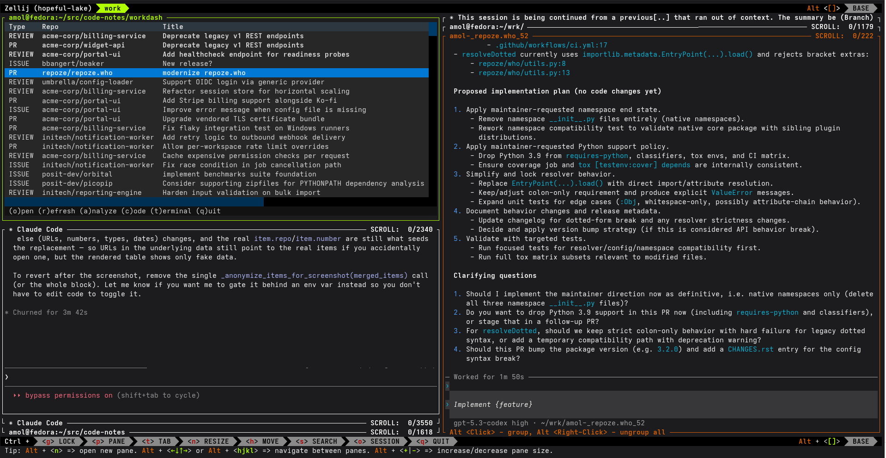

⚡
workdash
Text-based GitHub work triage dashboard. Pick what to work on next, then jump straight into a review, an AI analysis, or a full coding session in a dedicated worktree.

Text-based GitHub work triage dashboard. Pick what to work on next, then jump straight into a review, an AI analysis, or a full coding session in a dedicated worktree.
workdash pulls together the issues and pull requests
that matter to you across your GitHub repositories, merges and
deduplicates them, sorts by last update, and marks one entry as the
suggested next thing to pick up. From there, one keystroke
opens the item in your browser, runs a cached AI analysis, or starts
a coding session in a git worktree prepared for that exact item.
Jump straight to the issue or pull request on GitHub.
Re-pull authored PRs, review requests, assignments, and tracked items.
Run Claude or Codex against the item, render the result as HTML,
and cache it — keyed by the GitHub updated_at so
stale entries invalidate themselves.
Prepare a dedicated git worktree and launch Claude, Codex, or VSCode Copilot inside it, preloaded with the item's context.
Drop into a terminal in the item's worktree, no agent attached.
Same triage, emitted as plain text for scripts, pipes, and agents that want the dashboard without the TUI.



With uv — one isolated
install, workdash on your PATH:
uv tool install workdashThen generate the configuration interactively:
workdash --configureLaunch the TUI:
workdashgh auth status must succeed).
ptyxis or konsole.xdg-open or open for links and rendered analyses.claude, codex,
code.
Linux and macOS. Not tested on Windows.